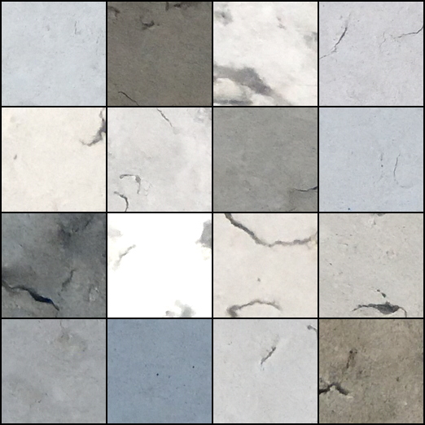

01
Can a DDPM learn the visual grammar of concrete?
Baseline texture synthesis on SDNET2018. The model learned aggregate, colour and surface roughness — but could not be instructed to create a crack.
SDNET201850,482 trainFID 5.6046
RESEARCH ARCHIVE · 2026
A transparent record of six experiments in synthetic concrete-crack image generation — from uncontrolled texture synthesis to morphology-aware, mechanism-aware and spatial-physics conditioning.
WHY THIS PROJECT
Structural cracks carry geometry, continuity, orientation and — ultimately — a failure mechanism. This project studies whether diffusion models can synthesize useful concrete-surface images while making those properties explicit and inspectable.
The archive separates what was measured from what was inferred. FID, KID and LPIPS describe distribution similarity; they do not prove that a generated image contains a physically meaningful crack. That distinction is part of the result.
THE EXPERIMENTS
Every card keeps the same structure: aim, stack, procedure, observations, results, assumptions, errors and conclusion.
Baseline texture synthesis on SDNET2018. The model learned aggregate, colour and surface roughness — but could not be instructed to create a crack.
A learned two-class embedding and balanced sampler separate cracked from non-cracked generation. Distribution metrics improved, while crack correctness remained unproven.
SDNET2018 was combined with the cracked RC_10519 subset. Training completed; the user closed the experiment before the large evaluation run.
Native-resolution AttentionUNet with five morphology classes: longitudinal, transverse, diagonal, alligator-map and non-cracked.
Seven physics-grounded failure mechanisms synthesized with native-resolution transfer learning, canonical orientation and mechanism-aware evaluation.
Level C adds trajectory and aperture-field conditioning to the seven mechanism classes, reaching 100% measured mechanism adherence across cracked classes.
COMPARISON
The project is not a leaderboard. Each experiment changes one important capability and exposes a new failure mode to investigate.
| Experiment | Condition | Resolution | Training data | Evidence status | Main lesson |
|---|---|---|---|---|---|
| 01 Unconditional | None | 64² | 50,482 | complete | Texture learned; crack control absent. |
| 02 Crack status | 2 classes | 64² | 50,482 | complete | Conditioning improves distribution similarity. |
| 03 Augmented | 2 classes | 128² | 61,001 | closed / pending eval | Higher resolution and new data are promising but unmeasured. |
| 04 Morphology | 5 classes + CFG | 256² | 13,139 curated | complete | Native resolution improves crack continuity. |
| 05 Mechanism | 7 structural states | 256² | 15,440 patches | complete | Mechanism labels improve physical interpretability. |
| 06 Spatial physics | 7 states + 2 fields | 256² | 112 generated | complete | Explicit fields improve adherence while fidelity remains a trade-off. |
EVIDENCE WALL
Representative grids are copied from the project archive. Click any image to enlarge it.





MEASURED, NOT IMPLIED
Experiment 4 uses a separate 80-sample evaluation record. Experiment 3 has no final quality metrics.
Curves load from the copied experiment logs. A curve is shown only when its source CSV is present.
FID, KID and LPIPS measure similarity to a reference distribution. They do not tell us whether a generated crack is continuous, correctly oriented, or caused by the requested mechanism.
ASSUMPTIONS & ERROR LOG
These are not footnotes. They are part of the experimental record.
RESEARCH ARCHIVE
The original technical artifacts stay available so the website remains auditable.
THE TAKEAWAY
The next meaningful proof is not another attractive grid. It is a validated crack-presence test, structural-mechanism adherence, and downstream utility on a held-out dataset.
Read the experiment record ↗